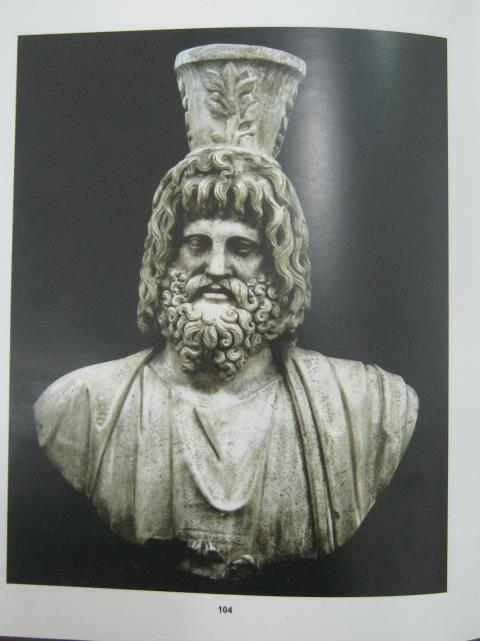
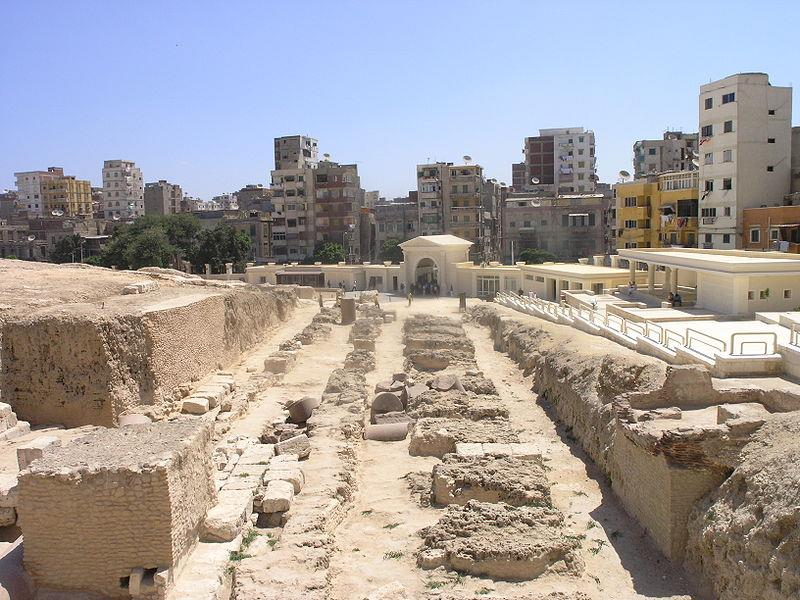

قاموس المرشد السياحي: كلمات ومصطلحات المحاضرة الرابعة
💡 تنبيه للمرشد السياحي: استخرجنا لك أدق المصطلحات التاريخية والسياسية الواردة في نص المحاضرة الرابعة بكتاب الدكتورة مرفت ماهر أمين؛ وهي مواضع أسئلة أساسية في امتحانات الكلية:
المعنى بالعربي: «المُنقذ». لقب أطلقه أهل جزيرة رودس على بطليموس الأول بعد أن أنقذهم بأسطوله من حصار ديمتريوس بوليوركيتيس الرهيب.
المعنى بالعربي: النبيل المقدوني لاجوس والد بطليموس؛ ولهذا تُسمى السلالة البطلمية أحياناً في المراجع بـ «الأسرة اللاحيدية / اللاجية (Lagids)».
المعنى بالعربي: مصرفي يوناني من نوقراطيس عينه الإسكندر مشرفاً مالياً؛ استغل منصبه وابتز المصريين، فحاكمه بطليموس وأعدمه وصادر أمواله.
المعنى بالعربي: «التالنت». أعلى وحدة نقدية ووزنية في العالم القديم (تعادل حوالي 26 كجم من المعدن النفيس). بلغت ثروة كليومينس 8000 وزنة ذهبية!
المعنى بالعربي: إقليم برقة بشرق ليبيا الحالية؛ أخمد بطليموس حربه الأهلية وضمه رسمياً لأملاك مصر (Egyptian Prosperities).
المعنى بالعربي: موسم فيضان النيل السنوي؛ هاجم فيه بيرديكاس مصر ففشل في عبور النهر عند منف وغرق معظم جنوده بالوحول.
المعنى بالعربي: الموت غرقاً في الماء؛ مصير جنود بيرديكاس الذين جرفهم تيار فيضان النيل الجارف عند محاولة عبور جزيرة الجمال.
المعنى بالعربي: الابن الأكبر لبطليموس الأول من زوجته يوريديكي؛ اتصف بالفظاظة والخشونة (Rough manner) فاستُبعد من ولاية العهد وهرب لتراقيا.
المعنى بالعربي: مجمع ومعهد البحث العلمي التابع للمكتبة، وأصله معبد إلهات الفنون والإلهام (Muses) في الحي الملكي بالإسكندرية.
المعنى بالعربي: سيطرة الدولة الكاملة على إنتاج وتوزيع سلع استراتيجية (كالزيوت، ورق البردي، والمنسوجات) لتحقيق أعلى عائد مالي للخزانة.
المعنى بالعربي: المدينة الإغريقية التي أسسها بطليموس الأول في مصر العليا بالصعيد (مركز المنشأة بمحافظة سوهاج حالياً).
المعنى بالعربي: إله توفيقي مركب ابتكره بطليموس الأول؛ يجمع بين أوزوريس وآبيس المصريين (Osorapis) وزيوس وهاديس وديونيسوس الإغريق.
نشأة بطليموس، حراسة الإسكندر، وتصفية المالي كليومينس
• النشأة والقرابة: بطليموس الأول هو ابن لاجوس (Lagus) ونشأ في بيلا بمقدونيا، وقيل إن أمه كانت تمت بصلة قرابة للأسرة الملكية. وكان يكبر الإسكندر الأكبر بنحو 10 سنوات وكان صديقاً مقرباً ومخلصاً له.
• حين تولى الإسكندر العرش، انضم بطليموس للجيش لكفاءته وشجاعته النادرة، وسرعان ما أصبح أحد الحراس الشخصيين السبعة (seven body guards) للإسكندر.
• استلام ولاية مصر: بعد وفاة الإسكندر لم يكن لمصر والٍ (ساتراب)، بل كانت تحت إدارة كليومينس (Cleomenes)، وهو مصرفي إغريقي من نوقراطيس عينه الإسكندر مسؤولاً مالياً. وبموجب مؤتمر بابل 323 ق.م، أصبح بطليموس رسمياً ساتراب (والياً) على مصر.
• أعطى الوصي بيرديكاس بطليموس مبلغاً ضئيلاً جداً من المال و2000 جندي فقط ليرافقوه إلى مصر. لكن بطليموس جلب معه كافة التماثيل والأشياء المقدسة التي نهبها الملوك الفرس قديماً ليكسب قلوب المصريين!
• تصفية كليومينس: فور وصوله، اشتكى الشعب المصري من مظالم كليومينس وابتزازه؛ فقدمه بطليموس للمحاكمة وحُكم عليه بالإعدام، وصودرت ثروته الطائلة لخزينة الدولة وبلغت نحو 8000 وزنة ذهبية (8000 talent of gold)!
• أثار هذا العمل غضب الوصي بيرديكاس بشدة، فطلب من بطليموس إرسال إيرادات مصر إليه، فرفض بطليموس الاستجابة له!
"Ptolemy I, son of Lagus who was brought up to Pella, his mother was said to have been related to the royal family. Though, he was 10 years older than Alexander the great, and he was a close friend.
When Alexander became the king of Macedonia, Ptolemy joined the army due to his efficiency and bravery... he became one of the seven body guards of Alexander the great. After the death of Alexander, Egypt had no satrap, having been left under the administration of Cleomenes, a Greek banker from Naucratis. According to Babylonian conference in 323 BC, Ptolemy became the satrap of Egypt.
Perdiccas the regent gave Ptolemy very little money and 2000 soldiers to accompany him to Egypt. Ptolemy brought all the statues and other sacred objects which had been looted by the Persian kings years ago.
When Ptolemy I returned to Egypt, the people complained against Cleomenes... Cleomenes was put on trial and he was executed, all of his wealth was disposal for the treasury of the government about 8000 talent of gold.
This act made Perdicas, the regent of the throne very angry, so he asked Ptolemy I to send him the revenue of Egypt but Ptolemy reclined to answer him."
كان الوصي بيرديكاس في بابل يظن أنه يتخلص من بطليموس الذكي بنفيه إلى مصر بجيش هزيل لا يتجاوز ألفي مقاتل وقليل من المال، تاركاً إياه في مواجهة كليومينس المصرفي الثري المحنك. لكن بطليموس أثبت أنه ثعلب سياسي بارع؛ أول ما فعله هو استعادة تماثيل الآلهة المصرية التي سرقها الفرس منذ قرون، فاستقبله الكهنة والمصريون كبطل قومي! ثم استغل غضب الشعب على كليومينس، فقبض عليه وأعدمه ووضع يده على خزانة أسطورية بها 8000 وزنة ذهب (وهي ثروة تكفي لشراء جيوش العالم القديم بأكمله). وحين أرسل له بيرديكاس يطالبه بإرسال أموال مصر إلى بابل، رد عليه بطليموس بتجاهل تام؛ فبدأت طبول الحرب بين الجانبين!
ضم إقليم برقة (Cyrenaica) ومصرع بيرديكاس في فيضان النيل
• ضم برقة (ليبيا): أرسل بطليموس جيشاً إلى ليبيا لوضع حد للحرب الأهلية المندلعة هناك ونجح في إنهائها؛ وأخذ إقليم قورينائية (Cyrenaica / برقة) كغنيمة حرب وضمها لأملاك مصر لتأمين حدود مصر الغربية.
• غزو بيرديكاس لمصر: أثارت تصرفات بطليموس الثلاثة (إعدام كليومينس، ضم ليبيا، والامتناع عن إرسال إيرادات مصر) غضب الوصي بيرديكاس وشعر بالتحدي؛ فحشد جيشاً جراراً قوامه 20,000 جندي مشاة و5,000 فارس وقرر غزو مصر لسحق بطليموس.
• كارثة عبور النيل: وصل بيرديكاس إلى النيل بالقرب من منف في موسم الفيضان (inundation season)؛ وحاول عبور النهر مرتين لكن المحاولتين باءتا بفشل ذريع، وغرق (drowned) العديد من ضباطه وجنوده بسبب طبيعة الجزيرة الهشة والرواسب الطينية بوسط النهر.
• اغتيال بيرديكاس: شعر كبار ضباط بيرديكاس بالغضب الشديد والتمرد، فاقتحموا خيمة بيرديكاس وقتلوه في معسكره!
• دهاء بطليموس: عرض القادة المنتصرون زعامة وقيادة الجيش الإمبراطوري بالكامل على بطليموس، لكنه رفض بحكمة بالغة! وحل محل بيرديكاس في الوصاية القائد أنتيباتر (Antipater) الذي أقر بتبعية ليبيا لبطليموس، وتزوج بطليموس ابنته يوريديكي (Eurydice) لتوثيق التحالف.
"Ptolemy sends an army to Libya to put an end for the civil war... took Cyrenaica as a prize of war and he annexed it to Egyptian Prosperities.
All three acts (Cleomenes, Libya, revenue of Egypt) made Perdicaas very angry and felt that Ptolemy challenged him, therefore Perdiccas prepared an army of 20,000 soldiers and 5000 horsemen, and decided to attack Ptolemy I in Egypt.
He reached the Nile near Memphis during the inundation season then tried to cross the river twice but both attempts failed and many of his soldiers and officers were drowned غرق because of the fragile island in the middle of the Nile.
Some senior officers felt very upset and angry so they went to the tent of Perdiccas and killed him.
The generals offered the leadership of the army to Ptolemy I but he refused to accept it. Perdiccas was replaced by Antipator who confirmed Libya under Ptolemy and Ptolemy married Antipator's daughter Eurydice."
كان نهر النيل أعظم حليف لبطليموس! ارتكب بيرديكاس خطأً استراتيجياً قاتلاً حين جاء لغزو مصر في ذروة موسم الفيضان؛ وعندما حاول إجبار جنوده على خوض النهر بالقرب من منف عند حصن الجمال، جرفت مياه النيل الهادرة آلاف الجنود والتهمتهم التماسيح أمام أعين زملائهم العاجزين! تحول معسكر بيرديكاس إلى مأتم وغضب عارم، فدخل عليه قادة فرسانه خيمته ليلاً ومزقوه بالسيوف. وفي الصباح، جاءوا إلى بطليموس وعرضوا عليه أن يتولى هو الوصاية على الإمبراطورية ويقود الجيش؛ لكن بطليموس كان يعلم أن من يحاول حكم إمبراطورية الإسكندر المترامية سيُقتل حتماً، فرفض العرش الإمبراطوري بذكاء وفضّل أن يظل ملكاً هادئاً مستقراً على عرش مصر وبرقة!
زيجات بطليموس الأول الثلاث وصعود برنيكي الأولى
الزواج لإرضاء الإسكندر
Persian Woman (Artakama)تزوج امرأة فارسية في حفل زفاف سوسة الجماعي الشهير إرضاءً لرغبة الإسكندر الأكبر (to please Alexander) في دمج النبلاء بالفرس؛ وسرعان ما طلّقها فور وفاة الإسكندر.
الأميرة يوريديكي
Eurydice (Daughter of Antipater)تزوجها لأسباب سياسية بحتة لتأمين السيطرة على ليبيا وتوطيد العلاقات مع وصي مقدونيا أنتيباتر. أنجبت له 4 أطفال، أكبرهم كيراونوس (Keraunos) الذي كان فظ السلوك ونبذه والده والبلاط فهرب لتراقيا.
الملكة برنيكي الأولى
Queen Berenice Iتزوجها عن حب واقتناع شخصي (to please himself). كانت وصيفة للملكة يوريديكي وأرملة لها 3 أطفال (أكبرهم ماجاس Magas عينه حاكماً لليبيا). وأنجبت له: بطليموس الثاني فيلادلفوس وأرسينوي الثانية!
• تزوج بطليموس الأول ثلاث مرات في حياته:
• الزواج الأول: كان لإرضاء الإسكندر الأكبر، فتزوج امرأة فارسية (أرتاكاما)، ثم طلقها بعد وفاة الإسكندر مباشرة.
• الزواج الثاني: كان لأسباب سياسية (for political reason)؛ فتزوج يوريديكي (Eurydice) ابنة أنتيباتر لكسب ليبيا والحفاظ على علاقة جيدة مع وصاية مقدونيا. أنجبت له أربعة أبناء، كان أكبرهم ولداً يُدعى كيراونوس (Keraunos) وكان فظ الطباع وخشناً جداً (very rough manner)، فكرهه أبوه ورجال البلاط، فغادر مصر إلى تراقيا.
• الزواج الثالث: كان لإرضاء نفسه واختياره الشخصي (to please himself)؛ فتزوج برنيكي (Berenice) التي كانت تعمل في خدمة الملكة يوريديكي! وكانت أرملة ولديها ثلاثة أطفال، كان أكبرهم يُدعى ماجاس (Magas) الذي عينه بطليموس الأول لاحقاً ملكاً على ليبيا تحت قيادة مصر. وأنجبت برنيكي لبطليموس طفلين: بطليموس الثاني (Ptolemy II) وأرسينوي الثانية (Arsinoe II).
"Ptolemy I married three times:
The first marriage was to please Alexander the great, he married a Persian woman, and he divorced her after the death of Alexander the great.
The second marriage was for political reason; he married Eurydice the daughter of Antipator to obtain Libya and to keep good relation with the regency of Macedonia... she gave him four children, the eldest was a boy called Keraunos who was very rough manner, disliked by his father and court men, and left Egypt going to Thrace.
The third marriage to please himself, he married Berenice who was working in the service of queen Eurydice, also she was a widow with three children, her eldest son was called Magas, later on appointed king of Libya... Berenice gave two children Ptolemy II and Arsinoe II."
كانت الملكة برنيكي الأولى أعظم داهية نسائية في بداية العصر البطلمي! دخلت القصر كوصيفة بسيطة ترافق الملكة يوريديكي، لكنها بسحرها وذكائها استطاعت أن تأسر عقل وقلب الملك بطليموس الأول. ولم تكتفِ بأن تصبح الملكة الأولى والزوجة الأثيرة، بل استطاعت بحنكة استثنائية أن تقنع بطليموس بعزل ابنه البكر الشرس «كيراونوس» من ولاية العهد، ونقل العرش والتاج بالكامل إلى ابنها الصغير المحبوب «بطليموس الثاني فيلادلفوس»، مؤسسةً بذلك لأعظم عصور الازدهار الثقافي في مصر البطلمية!
إنجازات بطليموس الأول: الجيش، الاقتصاد، مكتبة الإسكندرية، والموسيون
تأسيس دار الحكمة العالمية: الموسيون والمكتبة الكبرى
أسس بطليموس الأول المتحف ومجمع البحث العلمي (The Museum) والمكتبة الكبرى (The Great Library) في الحي الملكي (Brucheum) بالإسكندرية. واستقدم إليها كبار علماء ومفكري الإغريق مثل الرياضي العبقري إقليدس صاحب الهندسة الإقليدية، وجعل مصر منارة للفكر والعلوم في العالم القديم.
• حكم بطليموس الأول مصر لأكثر من عشرين عاماً (حكم كساتراب منذ 323 ق.م وأعلن نفسه ملكاً 305–283 ق.م).
• تنظيم الجيش: بنى جيشاً وأسطولاً بحرياً قوياً، لكنه منع المصريين من الانضمام للجيش؛ وشجع اليونانيين والمقدونيين على المجيء والاستيطان في مصر (settle يستوطنوا) لخدمته في الجيش عند الحاجة.
• بناء وترميم المعابد: أعاد تنظيم مصر وبدأ في تشييد وترميم المعابد المصرية، وهو المفهوم الذي طوره البطالمة اللاحقون لتأكيد حقهم الديني في حكم مصر.
• أسس عبادة تقديس الإسكندر الأكبر بالإسكندرية، وشيد معبداً لتقديس شخصه في قفط (Koptos).
• أسس المتحف والمكتبة الكبرى بالحي الملكي بالإسكندرية، ومدينة بطلمية (Ptolemais) الإغريقية في مصر العليا.
• الإصلاح الاقتصادي الشامل:
١. استصلاح أراضٍ زراعية واسعة وتطهير القنوات وحفر ترع جديدة.
٢. إدخال النظام المصرفي (banking system) والنظام النقدي (monetary system) لسك العملات.
٣. تطبيق نظام الاحتكار (monopoly system) في الصناعة.
٤. إدخال محاصيل ونباتات وسلالات حيوانية جديدة، وإصلاح نظام الضرائب وطرد جباة الضرائب الفاسدين.
٥. الحفاظ على التقسيم الإداري التقليدي لمصر: 42 إقليماً (nomes).
"Ptolemy I ruled Egypt more than 20 years, trying to build a strong army and navy however he prevented the Egyptians from joining the army. He encouraged Greeks and Macedonians to settle يستوطنوا in Egypt.
Ptolemy I re-organized Egypt and began in building and restoring Egyptian temples, a concept which later Ptolemies developed to enforce their religious right to rule Egypt.
Founded a cult of Alexander the Great at Alexandria and a temple for his personal cult at Koptos.
Founded the Museum and Great Library in the palace quarter, and the Greek city of Ptolemais in Upper Egypt.
Improved economic system: reclaimed agricultural lands, improved irrigation, introduced banking system as well as monetary system, and introduced monopoly system in industry.
Introduced new crops, plants, animal herds. Improved taxation, fired bad tax collectors, and kept old division of 42 nomes."
كان بطليموس يعلم أن السيف وحده لا يحمي العرش؛ فالإمبراطورية تحتاج إلى مال وعلم وعقيدة. لذا أسس نظام احتكار محكم؛ كانت الدولة هي المشتري الوحيد لمحصول الزيوت والكتان والبردي والمسؤولة عن تصنيعها، مما ضخ ملايين الدنانير الذهبية في خزينة الإسكندرية. ولم ينسَ جانب القوة العسكرية، فمنح الجنود المتقاعدين من اليونان مساحات أراضٍ واسعة في الفيوم والدلتا ليستقروا فيها وعائلاتهم ليكونوا جيش احتياط دائم. وتوج ذلك بأعظم صرح علمي في التاريخ: «المكتبة والموسيون» حيث وفر للعلماء سكناً وراتباً وكتباً نادرة، فجذب أعظم عقول الأرض إلى مصر!
عبادة الإله سيرابيس (The Cult of Serapis) ومعبد السرابيوم

تمثال نصفي للإله سيرابيس (Bust of Serapis)
تمثال رخامي شهير يُعرض بالمتحف اليوناني الروماني بالإسكندرية؛ يظهر فيه سيرابيس بلحية وشعر كثيف كزيوس وهاديس، ويعلو رأسه مكيال القمح (الموديوس Modius) رمزاً للخصوبة والرخاء الزراعي بمصر.

معبد السرابيوم بالإسكندرية (Serapeum)
أعظم معابد الإسكندرية القديمة ومركز عبادة سيرابيس الرئيسي (منطقة كرموز حالياً عند عمود السواري). كان يضم المكتبة الابنة والسراديب المنحوتة لدفن تماثيل ونذور المعبود.
• الهدف السياسي والديني: من أجل توحيد المصريين واليونانيين في عقيدة مشتركة، أدخل بطليموس الأول عبادة الإله سيرابيس (Serapis).
• أصبح سيرابيس هو الإله الرسمي لمصر البطلمية، وكان مركز عبادته الرئيسي في الإسكندرية (معبد السرابيوم).
• شكّل سيرابيس مع إيزيس وحربوقراط الثالوث السكندري الشهير (Serapis, Isis, Harpocrates).
• تكوين الإله الهجين: كان سيرابيس إلهاً مركباً (composite god) دمج بين الإله المصري أوزورابيس Osorapis (المستمد أصلاً من اتحاد أوزوريس مع العجل آبيس المقدس) مع ملامح آلهة إغريقية هيلينستية متعددة مثل زيوس (Zeus) وهاديس (Hades) وديونيسوس (Dionysos).
• صُمم هذا الإله ليمنح الشعب المصري معبوداً مصرياً أصيلاً ممتزجاً باللاهوت والفلسفة اليونانية؛ وتجسدت فيه قوى الشفاء (healing) والخصوبة الزراعية (fertility).
"In order to unify the Egyptians and the Greeks, he introduced the cult of god Serapis.
Serapis is the official god of the Egyptians, his main cult centre was Alexandria, and he formed the triad consists of Serapis, Isis, Harpocrates.
Serapis was a composite god created during the reign of Ptolemy I Soter (305-285 BC) who combined the Egyptian god Osorapis (previously derived from a fusion of Osiris and Apis) with aspects of various Hellenistic gods such as Zeus, Hades and Dionysos.
He was created to provide the Egyptian people with an essential Egyptian deity blended with Greek theology. He presented several aspects, especially those of healing and fertility. The center of the Serapis cult was at Alexandria."
كانت المشكلة الكبرى أمام بطليموس هي: كيف يحكم شعبين مختلفين في كل شيء؟ المصريون ينفرون من آلهة اليونان العارية، واليونانيون يسخرون من آلهة المصريين ذات الرؤوس الحيوانية! فجمع بطليموس كاهناً مصرياً مفكراً (مانيتون السمنودي) وفيلسوفاً يونانياً أثينياً (تيموثيوس)، وطلب منهما تصميماً عبقرياً لمعبود يرضي الطرفين. أخذوا أوزوريس وآبيس (أوزورابيس) معبود الموت والبعث المحبوب في منف، وألبسوه رداءً إغريقياً ولحية مهيبة تشبه زيوس وهاديس، وتوجوا رأسه بمكيال القمح. وحين نظر المصري إلى التمثال في معبد السرابيوم قال: "هذا حامينا أوزوريس!"، وحين نظر اليوناني قال: "هذا زيوس العظيم!". بهذه العبقرية اللاهوتية، صنع بطليموس سلاماً مجتمعياً مكّن أسرته من حكم مصر لثلاثة قرون متصلة!
بنك الأسئلة التفاعلي: اختبر فهمك للمحاضرة الرابعة
المحاضرة الخامسة: الملك بطليموس الثاني فيلادلفوس (Ptolemy II Philadelphus)
أرسينوي الأولى وأرسينوي الثانية، استكمال فنار ومكتبة الإسكندرية، ترجمة التوراة السبعينية إلى اليونانية، كتابة تاريخ مانيتون السمنودي، وقناة سيزوستريس بالسويس.